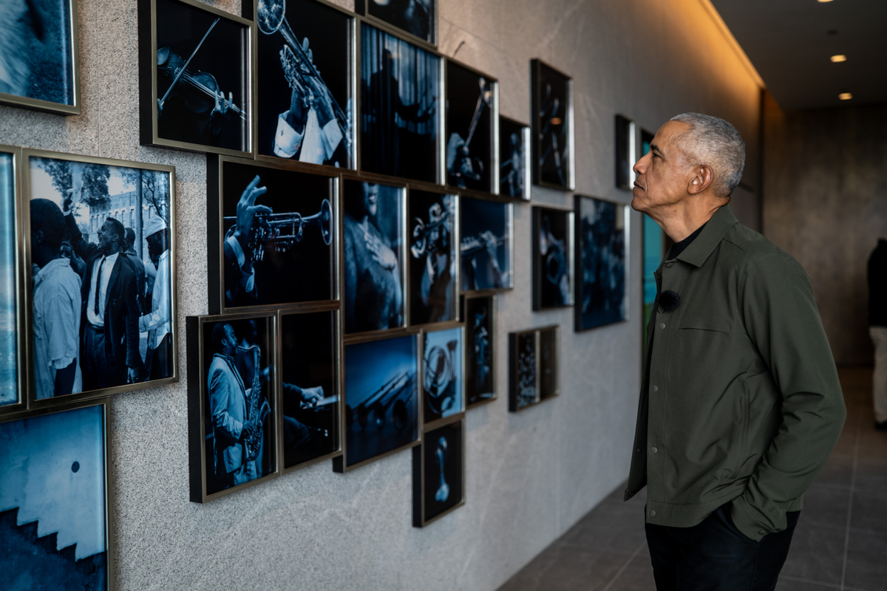
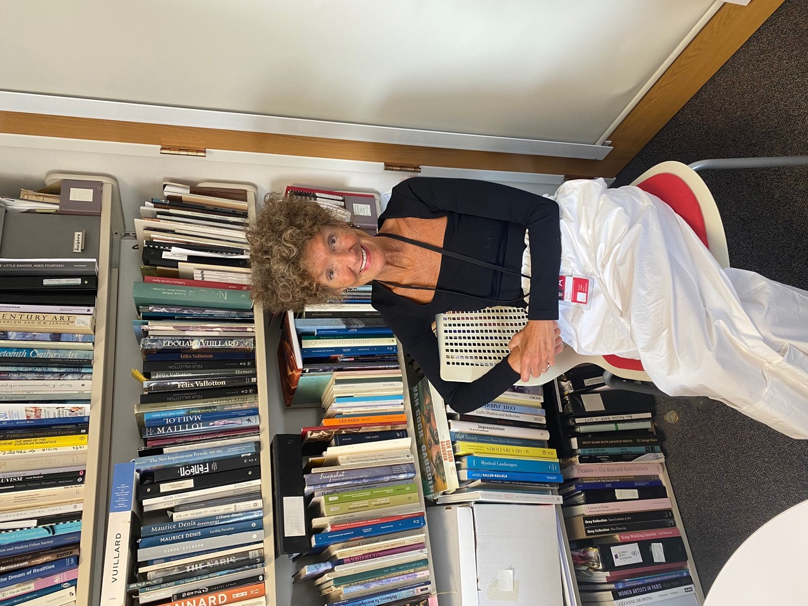
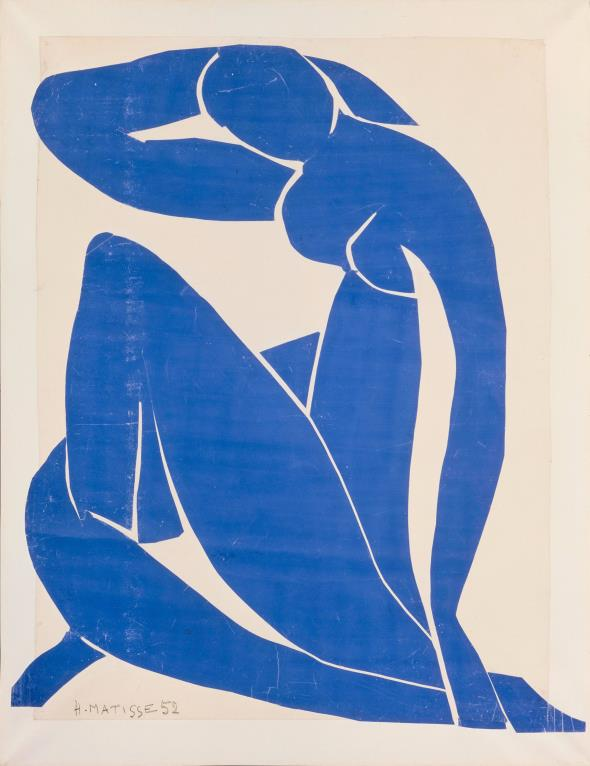

Boys & Girls Club

Art in the Sky Room, Obama Presidential Center
The Nelson Mandela Sky Room atop the Obama Presidential Center offers stunning views of Chicago and site-specific works of art to inspire and reflect.
Don’t Lose That Joy
When the WNBA All-Star practice came to the Obama Presidential Center, the building’s namesake walked onto the floor — and told Caitlin Clark not to lose that joy.

Biba’s Favorite Things: Gloria Groom
An afternoon with Gloria Groom, the Art Institute’s celebrated curator, whose four decades of devotion have helped masterpieces tell their stories.

My Silk Roads: Dispatch from Vienna
The My Silk Roads column returns to Vienna, Susan Aurinko’s favorite city, for a week of street photography and cool museum galleries in a near-100-degree summer.

Heritage Auction: Lincoln’s Office
A plain Midwestern table of poplar and walnut, ink-stained and unrestored, drew wonder in Chicago — for it may be where Abraham Lincoln penned “A House Divided” in 1858.

On the Verge of a Heatstroke
In a French heat wave, a dim kitchen and a chilled bowl of gazpacho become a meditation on lost coolness — Francesco Bianchini’s literary escape from the swelter.

Letter from Paris: Paris’s Great Museums and Summer Spectacles
Paris’s great museums and summer spectacles, in the last of three dispatches from Paris.